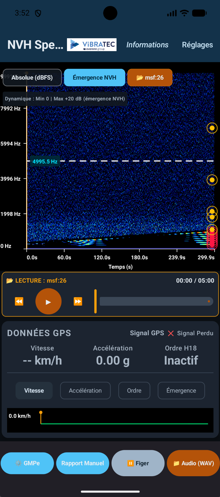
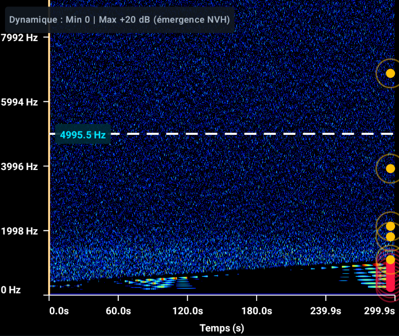

NVH Spectro transforme un téléphone Android en chaîne de mesure acoustique : spectrogramme temps réel, suivi d'ordres moteur projeté depuis la vitesse GNSS (filtre de Kalman), et rapports PDF traçables — pour les essais véhicule thermiques, hybrides et électriques.
Gratuit · open source · aucune donnée ne quitte l'appareil (pas de permission INTERNET, vérifié par la CI).

Du microphone du téléphone au rapport client, chaque étape est outillée — et chaque nombre sait d'où il vient.
FFT 512→4096, calibration Hann exacte (0 dBFS lu 0 dBFS). Deux vues : niveau absolu et indice d'émergence NVH. Fenêtre, plage dB et plage fréquence réglables en direct.
Cinématique V1000, rapport global ou chaîne détaillée (réducteur × pont × pneu). Projection H1/Hn, étiquetage des harmoniques émergentes, rapport d'émergence accumulé.
Vitesse Doppler du GPS interne, filtre Kalman [vitesse, accélération] avec covariance, rejet des fixes aberrants. Chaque estimation porte son âge, son σ et sa validité.
Import WAV (parser RIFF complet) et extraction audio des vidéos locales, analysés à leur propre fréquence d'échantillonnage. Télémétrie rejouée par lissage RTS.
Enregistrement 30 s audio + télémétrie, mode rapport manuel avec tracé assisté, export PNG et PDF avec cartouche : date, build, source, route micro, paramètres, statut de vitesse.
Thème sombre calibré habitacle, contrastes WCAG testés par la CI, TalkBack, cibles 48 dp, dégradation par permission annoncée à l'écran.

Le téléphone capte deux signaux : le son habitacle (microphone non traité) et la vitesse (Doppler GNSS). La physique du véhicule relie les deux.
L'incertitude de vitesse σv se propage en RPM puis en fréquence : σf(Hₙ) = n · σv · 1000 / (60 · V1000). La fenêtre de recherche du pic vaut k·σf + Δf — assez large pour contenir la vraie raie, bornée à mi-distance de l'ordre voisin : au-delà, le suivi s'affiche « non identifiable » plutôt que d'inventer une valeur.
La vitesse est évaluée à l'instant de capture du buffer audio (horloge BOOTTIME matérielle d'AudioRecord), pas à l'instant du calcul. Un fix périmé rend la vitesse indisponible : l'écran affiche "--" plutôt qu'un dernier chiffre figé.
Un instrument crédible refuse de répondre quand il ne peut pas répondre. NVH Spectro applique cette règle partout.
La permission INTERNET n'est pas déclarée — et la CI échoue la build si elle réapparaît, comme toute surface WebView/JS. Enregistrements, télémétrie et journaux ne quittent l'appareil que par un export explicite.
Vitesse périmée, GNSS désactivé, fix simulé : la vitesse devient indisponible au lieu d'être figée. Un 0,0 km/h réel est affiché tel quel — l'absence de mesure et l'arrêt du véhicule sont deux informations différentes.
L'indice d'émergence NVH est un indicateur maison, pas un TTNR ECMA-74 : le rapport PDF le dit en toutes lettres en bas de page. Aucun libellé normatif ne couvre un calcul non conforme.
Cartouche de traçabilité : date, version, source, route micro réellement obtenue (UNPROCESSED / VOICE_RECOGNITION), estimateur de vitesse et ses paramètres, statut « causale » ou « lissée (RTS) », niveau de confiance k.
fichier:ligne.
Le moteur de mesure est du Kotlin pur, testé sur JVM à chaque push. La couche Android ne fait que l'interface et les capteurs.
FFTProcessor · OrderTrackingEngine · OrderSearchPolicyKalmanSpeedEstimator · GnssSpeedSessionMeasurementSession · WavAnalysis · TelemetryCodec
≥ 90 % de couverture de ligne, imposée par la CI. Un import Android qui réapparaît casse la build.
CaptureEngine (un seul propriétaire du micro) · SpeedProviderLiveViewModel · AnalyzerViewModel · ReportViewModelRecordingStore · SettingsStore · export/ (PNG, PDF)
202 tests JVM, snapshot doré DSP (tolérance 1e-9), zéro erreur lint sans baseline.
Le projet est piloté par des documents versionnés : audit → plan → journal d'exécution avec preuves. Rien n'est déclaré fait sans preuve d'appareil.
Calibration FFT, modèle d'émergence, suivi d'ordres — les maths, avec leurs limites assumées.
Qualification des fixes, Kalman à covariance, fenêtres σ, reconstruction RTS.
Modules, session partagée, threads, cycle de vie des ressources.
Les gates, les 202 tests, les audits publics et les notes affichées.
Prérequis : JDK 17 et le SDK Android (compileSdk 36, minSdk 24).
# cloner git clone https://github.com/Luigi-BARTH/NVHSpectro.git && cd NVHSpectro # vérifier (tests, couverture ≥ 90 % :core, lint, gates d'hygiène) ./gradlew :core:test :app:testDebugUnitTest :core:koverVerify :app:lintDebug # installer sur l'appareil connecté ./gradlew :app:installDebug
Au premier lancement, accordez micro et localisation précise : le micro devient la source de mesure, le GPS alimente la projection d'ordres. Sans eux, l'app reste utilisable en analyse de fichiers — et elle l'explique à l'écran.